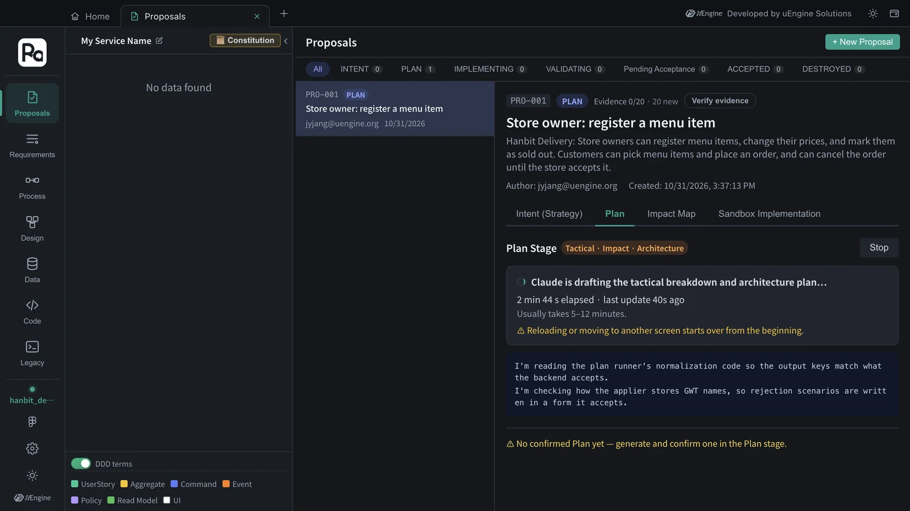
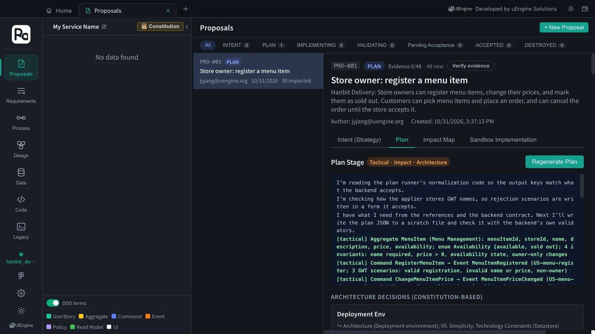
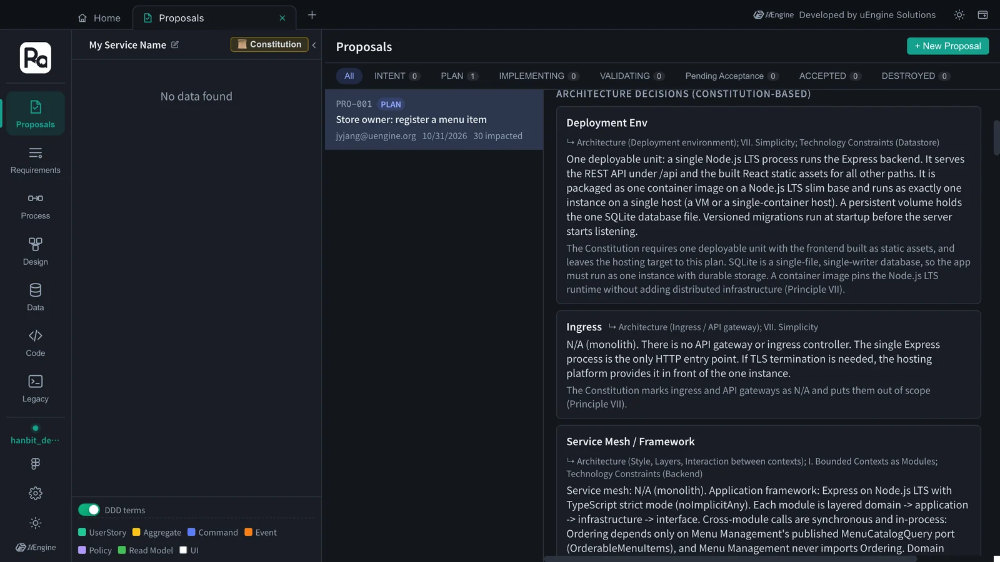
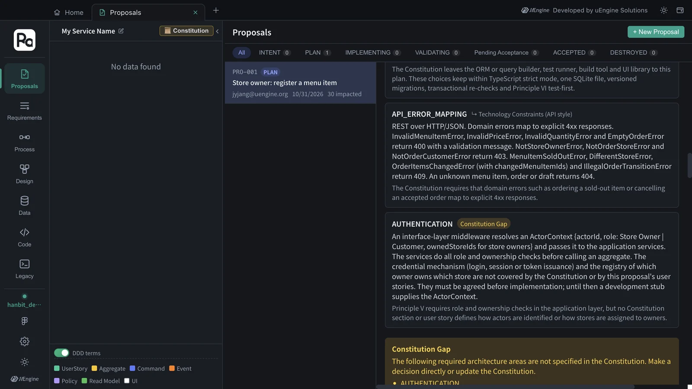
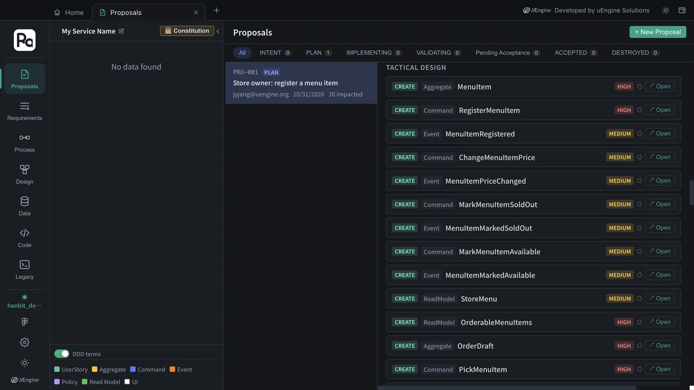
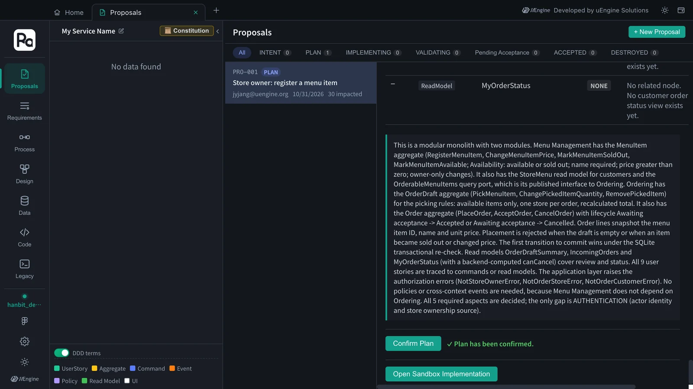

Based on the constitution, Claude Code sets the proposal's tactical design (aggregates · commands · events · read models) and its architecture decisions (deployment · data access · API contracts · authentication · test strategy). Each decision cites the constitution passage it rests on, and areas the constitution is silent on surface as a “Constitution Gap”.
Why a plan#
The strategic design (Chapter 3) is the “what”. To implement it, you need the “how”. The plan decides two things.
- Tactical design — the building blocks of DDD: aggregates (the unit that keeps consistency), commands (requests that change state), events (facts that happened) and read models (models for queries)
- Architecture decisions — things like deployment units, data access, API contracts, authentication and test strategy. Each decision states which passage of the constitution it came from
Hands-on 1 — Generate the plan#
- In the Plan section of
PRO-001, click Generate Plan (if you just created the constitution, it starts by itself). - “Claude is drafting the tactical breakdown and architecture plan…” and the elapsed time appear. It usually takes 5–12 minutes; in this tutorial it took about 11½ minutes (693 seconds, counted from the moment the constitution was saved).

Stay on that screen while it generates
Plan generation works by having the screen receive the result as it streams, so reloading during generation, or moving to another screen in that tab, starts it over from the beginning. If you want to do something else, open a new tab from Home.
Hands-on 2 — Read the plan#
When generation finishes, the progress log is at the top, followed by Architecture Decisions (Constitution-based), Constitution Gap, Tactical Design, and a summary.

Architecture decisions#
Each decision shows, next to its title, the constitution sections it rests on (e.g. ↳ Architecture (Deployment environment); VII. Simplicity; Technology Constraints (Datastore)). This time there were eleven decisions; here are some of them.
| Decision | Content | Based on |
|---|---|---|
| Deployment Env | One Node.js LTS process runs Express; it serves the REST API under /api and the built React assets, packaged as one container image with one SQLite file on a persistent volume |
Architecture, VII, Technology Constraints |
| Ingress · Service Mesh / Framework | N/A, it's a monolith. Express with TypeScript strict mode; each module is layered domain → application → infrastructure → interface, and Ordering calls only Menu Management's published MenuCatalogQuery port (OrderableMenuItems), in-process |
Architecture, I, Technology Constraints |
| Repo Mapping | Monorepo with npm workspaces: backend/src/modules/menu-management, backend/src/modules/ordering, backend/migrations, frontend/ |
Repository Strategy |
| LIBRARIES (data access, tests) | better-sqlite3 with hand-written SQL (no ORM); state-changing commands run in BEGIN IMMEDIATE transactions that re-check the state, so a conflicting AcceptOrder and CancelOrder can't both succeed; Vitest (test-first) · Supertest · React Testing Library |
Technology Constraints, VI |
| API_ERROR_MAPPING | Domain errors map to explicit 4xx: invalid input 400, not your store or order 403, sold out · different store · items changed · illegal transition 409, unknown 404 | Technology Constraints (API style) |
| AUTHENTICATION | A middleware resolves ActorContext {actorId, role, ownedStoreIds} and the services check role and ownership; how users log in and who owns which store is left open, with a development stub for now |
none — marked Constitution Gap (see below) |

Constitution Gap#
Areas the plan needs but the constitution doesn't decide appear in a yellow box. This time it was AUTHENTICATION — how users are identified and where “which store owner owns which store” comes from are in neither the constitution nor the proposal's user stories, so the plan used a development stub for now and left it as a gap. Handle such gaps by extending the constitution or in a later proposal (for example, sign-in and store registration).

Tactical design#
Tactical Design lists what to build (CREATE) with a priority (HIGH/MEDIUM). This time there were 28 items — 3 aggregates, 10 commands, 10 events and 5 read models.
| Aggregate | Command → event | Read models |
|---|---|---|
| MenuItem (Menu Management) | RegisterMenuItem → MenuItemRegistered · ChangeMenuItemPrice → MenuItemPriceChanged · MarkMenuItemSoldOut → MenuItemMarkedSoldOut · MarkMenuItemAvailable → MenuItemMarkedAvailable | StoreMenu · OrderableMenuItems |
| OrderDraft (Ordering) | PickMenuItem → MenuItemPicked · ChangePickedItemQuantity → PickedItemQuantityChanged · RemovePickedItem → PickedItemRemoved | OrderDraftSummary |
| Order (Ordering) | PlaceOrder → OrderPlaced · AcceptOrder → OrderAccepted · CancelOrder → OrderCancelled | IncomingOrders · MyOrderStatus |

Click Open to the right of an item to show that element on the design canvas as a preview. “OrderableMenuItems” is what the ordering module asks the menu module for, through the menu module's published port (MenuCatalogQuery) — this is constitution principle I (a module talks to another only through its published interface) carried down into the tactical design. “OrderDraft” is the order being put together before it is placed, so the picking rules (available items only, one store per order) have their own aggregate.
Hands-on 3 — Confirm the plan#
- Scroll to the bottom, read the summary, and click Confirm Plan.
- “✓ Plan has been confirmed.” appears. The proposal's status is SUBMITTED (listed under PLAN; it got there when you clicked Proceed to Plan →), and Open Sandbox Implementation appears below (Chapter 6).

What to check#
- The plan has architecture decisions, each citing the constitution section it rests on.
- Tactical Design has the aggregates MenuItem · OrderDraft · Order.
- You confirmed the plan and Open Sandbox Implementation is visible.
Quiz#
- What is a mark like
↳ VII. Simplicitynext to an architecture decision? - A “Constitution Gap” appeared. Can you ignore it and carry on?
- How do you look at another screen while the plan is generating?
Answers
- The constitution section the decision rests on. It lets you trace where in the constitution each decision came from.
- You can carry on. But it means the plan decided that area provisionally, so it's better to extend the constitution or handle it in a later proposal.
- Open a new tab from Home. Reloading the tab that is generating, or moving to another screen in that tab, starts generation over.